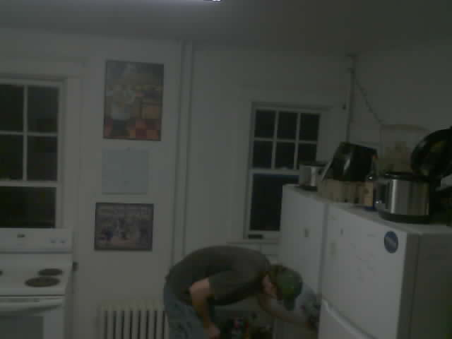
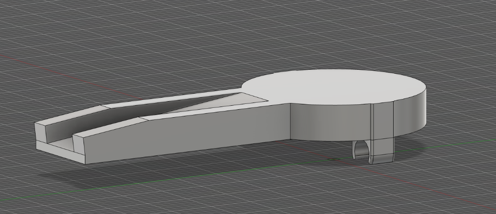
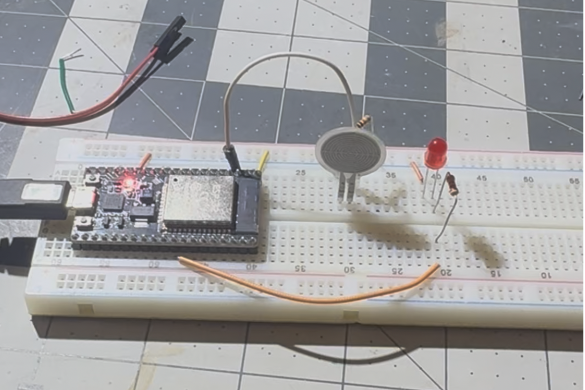
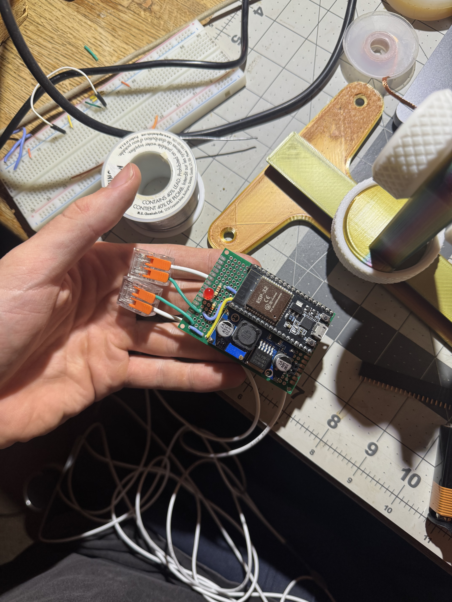
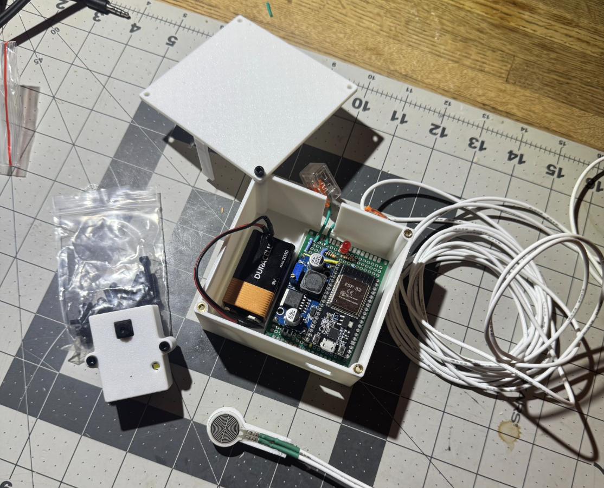
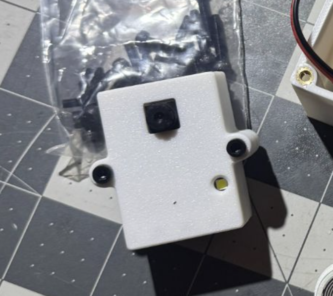
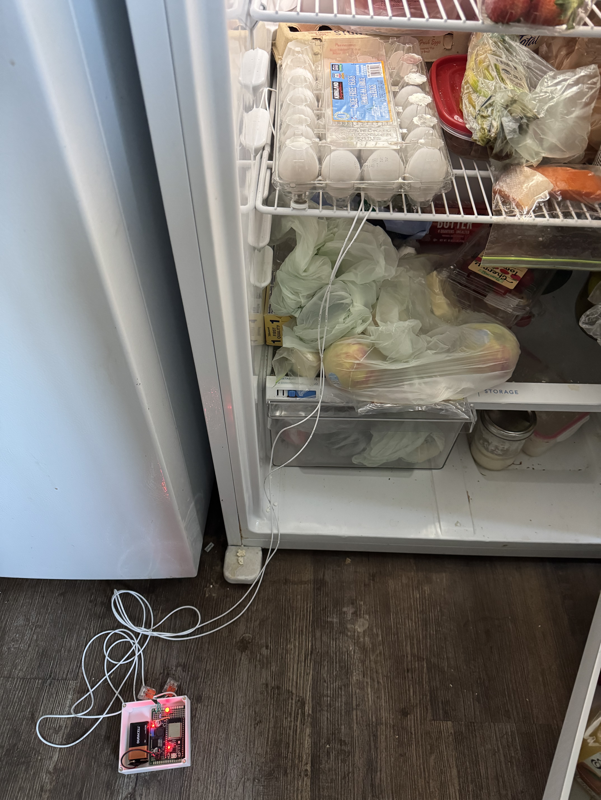

Catching an Egg Thief
One of my roommates continues to steal my eggs, and instead of confronting them I created a device to catch them in the act.

This device uses a force sensor to detect when the eggs are lifted. The sensor is connected to an ESP32 housed inside a control box. When the ESP32 detects a change in force, it sends a signal to an ESP32-CAM positioned elsewhere in the room, prompting it to take a photograph. The image is then transmitted over Wi-Fi to a Flask server running on my computer, where it is displayed.
Technologies used: Fusion 360, ESP32, Perf Boards, Soldering, C++, Python.
Background
While living at college, one of my 9 roommates continued to take my eggs. For weeks I would look in my pack of eggs to discover a couple had gone missing. Despite texting everyone to stop taking my eggs they kept disappearing, and since I’m an engineer there is only one thing for me to do. I must create a device to catch them red-handed.
Constraints
When designing the device, I had several important constraints to consider.
First, no wireless signal could reliably escape from inside the refrigerator. This meant that the sensor detecting the carton’s removal needed to be wired to a controller outside the fridge.
Second, I wanted the camera responsible for documenting the egg heist to remain reasonably concealed. Running visible wires across the room would have made the surveillance operation slightly less discreet.
Third, both devices needed to operate on battery power for extended periods. After all, the system would be much less effective if it ran out of power moments before the thief made their move.
Fortunately, I had recently become interested in building projects with the ESP32, which offers several capabilities beyond those of an Arduino Nano. One particularly useful feature is ESP-NOW, which allows ESP32 boards to communicate directly and efficiently with one another. During my research, I also discovered the ESP32-CAM, an ESP32 board with an integrated camera. It provided exactly what I needed to capture the culprit in the act.
The Design
The design is relatively simple. A force sensor is mounted inside the refrigerator beneath the egg carton, with wires running outside the fridge to a control box designed in Fusion 360. The control box houses the ESP32 that monitors the sensor. When the carton is lifted, the ESP32 sends a signal to the camera, prompting it to take a photo and catch the egg thief in the act.
The Force Sensor
I used a thin-film pressure sensor purchased from Amazon to detect the presence of the egg carton. The sensor is rated for temperatures from -40°C to 85°C, which is well beyond the conditions it would experience inside a refrigerator. It can also measure forces up to 6 kg, providing more than enough capacity for a carton of eggs.
I designed a simple mounting bracket to secure the sensor inside the refrigerator while keeping the wires clear of the carton.

The Control Box
The control box needed to serve several functions. It required an indicator to show when force was being detected, a reliable connection between the pressure sensor and the ESP32, a portable power source, and an enclosure to protect and organize all of the components.
Let's start with the circuitry:

The setup is relatively simple. When the force sensor detects a reading greater than 200, an LED turns on to indicate that the egg carton is in place. Once the force is removed, the ESP32 sends a command to the camera to take a photo.
After confirming that the entire system worked as intended, I transferred the electronics onto a perfboard to create a cleaner and more permanent assembly.

The system is powered by a 9-volt battery, with a buck converter reducing the voltage to the 5 volts required by the ESP32. To keep the components protected and organized, I designed a compact enclosure that could securely house the battery, converter, circuit board, and ESP32.

The Camera
The camera setup is fairly straightforward. After flashing the ESP32-CAM with the program, it simply waits to receive a signal through ESP-NOW before taking a photo. The only additional component I designed was a small enclosure that allowed the camera to be mounted securely to the wall.

Communication
ESPNOW: ESP-NOW is a peer-to-peer wireless communication protocol developed by Espressif Systems that allows ESP32 and ESP8266 microcontrollers to talk directly to each other without a Wi-Fi router. It bypasses the traditional network stack, using only the data-link layer, which results in ultra-fast, low-latency, and energy-efficient data transfers.
Flask: Flask was used to receive and store the images taken by the ESP32-CAM. After the camera captured a photo, it sent the image over Wi-Fi to a Flask server running on a computer. The server received the file through an upload route, saved it in a folder, and made it available on a simple gallery webpage. This allowed the captured images to be viewed from another device connected to the same network.
Full setup
Here is the full setup in the fridge

(disregard the fridge, 9 roomates)
Conclusion
And after a couple days…
The culprit was found
Overall, I greatly enjoyed this project. It gave me the opportunity to take a small problem from everyday life and apply the skills I had learned to create a practical solution. Through the process, I gained experience with wireless communication networks, Python, Wi-Fi connectivity, mechanical design, and mechatronic system integration.
If I were to improve the project, I would consider replacing the pressure sensor with a Hall effect sensor. This could provide a more reliable way to detect when the egg carton is removed.
If you have any questions, please feel free to reach out!